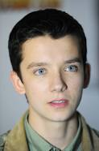

Elenco de O menino do pijama listrado
Asa Bopp Farr Butterfield

Fez o papel do menino Bruno no filme,personagem principal
- Nascimento:1 de abril de 1997
- Nacionalidade:Islington, Londres, Reino Unido
- Altura: 1,83m
- Irmãos: Loxie Butterfield, Morgan Butterfield, Marlie Butterfield
- Pais: Sam Butterfield, Jacqueline Farr
David Hayman
Fez o papel de Pavel
- Nascimento: 9 de fevereiro de 1948
- Nacionalidade: Bridgeton, Glasgow, Reino Unido
- Altura: 1,73m
- Cônjuge: Alice Griffin
- Filhos: David Hayman Jr., Sean Hayman
David Thewlis Wheeler
Faz o papel do comandante,pai de Bruno
- Nascimento: 20 de março de 1963
- Nacionalidade: Blackpool, Reino Unido
- Cônjuge: Hermine Poitou
- Filha: Gracie Ellen Mary Friel
Rupert Friend
Fez o papel de Tenente Koter
- Nascimento: outubro de 1981
- Nacionalidade: Stonesfield, Reino Unido
- Altura: 1,85m
- Cônjuge: Aimee Mullins
Vera Farmiga
Fez o papel de Elsa,mãe de Bruno
- Nascimento:6 de agosto de 1973
- Nacionalidade:Clifton, Nova Jersey, EUA
- Altura: 1,70m
- Cônjuge: Renn Hawkey
Amber Beattie
Fez o papel de Gretel,irmã de Bruno
- Nascimento:22 de julho de 1993
- Nacionalidade:Reino Unido
- Estudou Zoologia na Universidade de Leeds
Jack Scanlon
Fez o papel de Shmuel,o menino que ficava no campo de concentração
- Nascimento: 6 de agosto de 1998
- Nacionalidade: Cantuária, Reino Unido
- Fez um único filme
Cara Horgan
Fez o papel de Maria,cuidava da casa e de Bruno
- Nascimento: 5 de outubro de 1984
- Nacionalidade:Sudeste da Inglaterra, Reino Unido
- Formação: Drama Centre London, St Philip Howard Catholic School
Topo da página
Voltar para página inicial